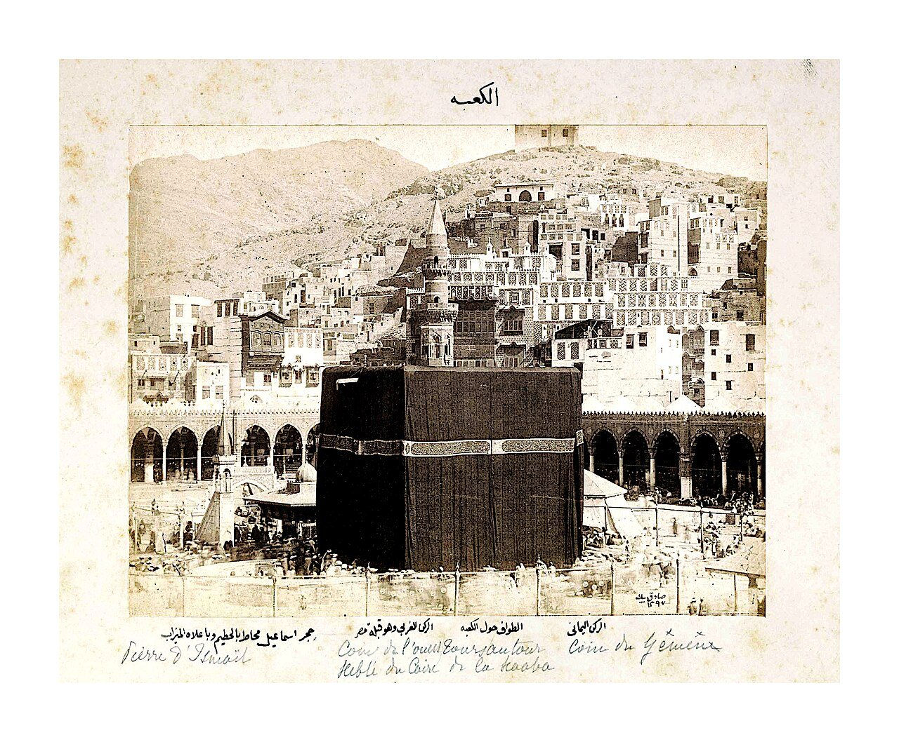
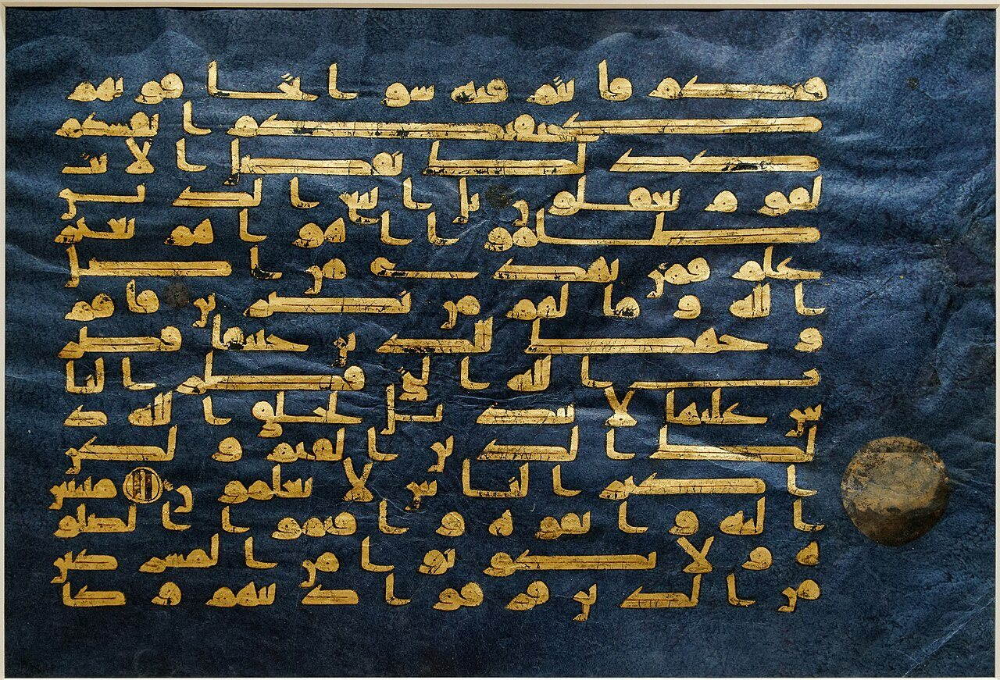
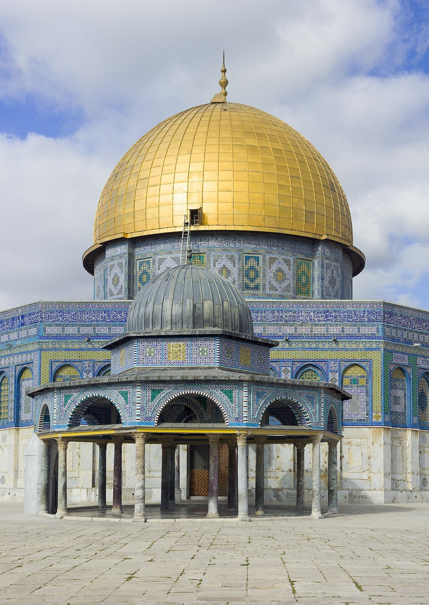
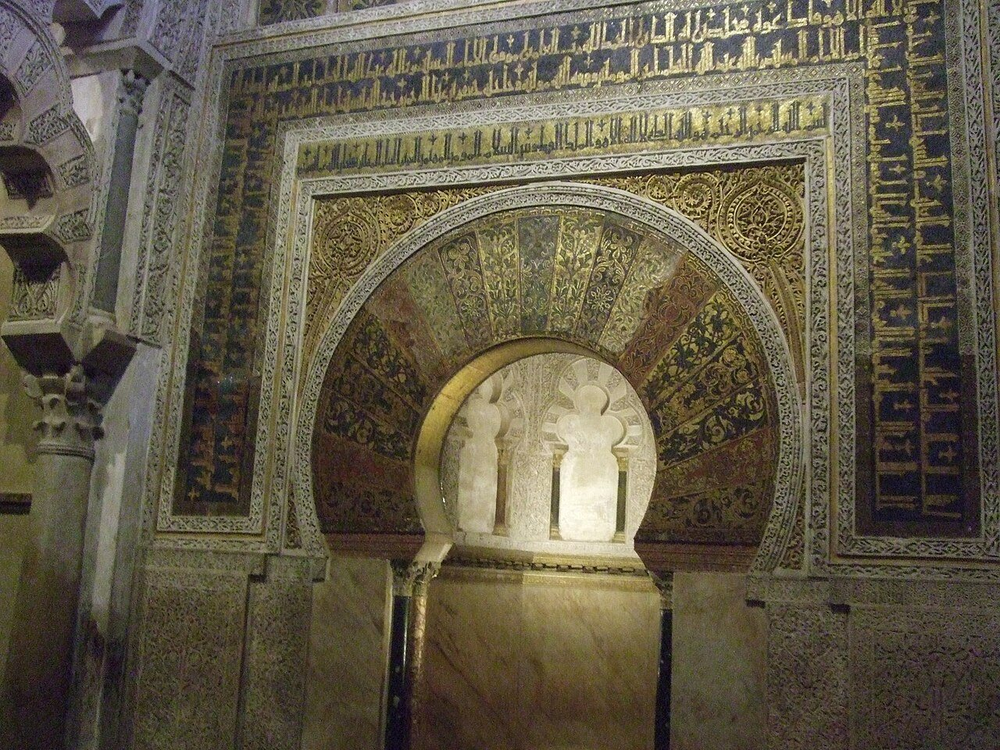
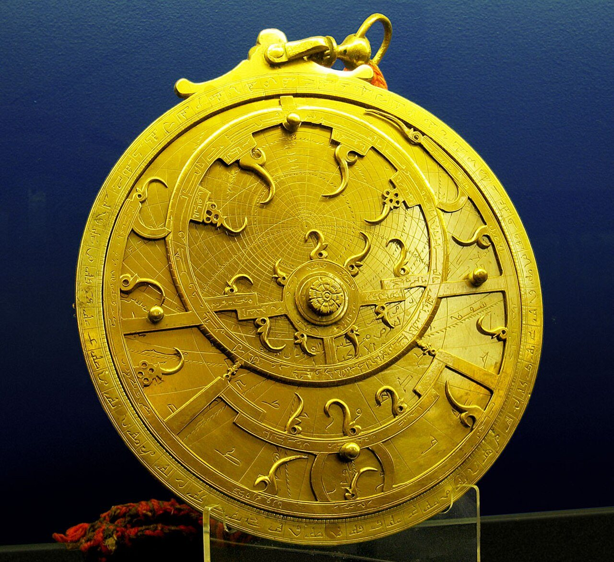

사진 · 1880년 무렵 메카의 카바
중학교 역사① · 3단원 세계 종교의 확산과 지역 문화의 발전
메카이슬람의 성립과 확산
무함마드 사디크 베이, 메카의 카바(1880년 무렵) · 칼릴리 컬렉션 · CC BY-SA 3.0
“이슬람은 어떻게
이슬람은 어떻게
짧은 시간에 넓게 퍼졌을까?
사실7세기 아라비아에서 시작
해석정복, 상업, 그리고 관용
확장오늘 세계 무슬림은 약 20억 명
622
사실무함마드가 메디나로 옮기다(헤지라)
해석이슬람력의 시작
확장믿는 사람들의 공동체
다섯 기둥
신앙 고백유일신 알라
예배하루 다섯 번
나눔가난한 이에게
단식라마단
순례메카

사진 · 왜 파란 종이에
금으로 썼을까?
왜 파란 종이에
금으로 썼을까?
사실쿠란 필사본, 9~10세기
해석귀한 말씀, 귀한 재료
확장아랍어로만 읽는 경전
푸른 쿠란 낱장(9~10세기) · 메트로폴리탄 미술관 · CC BY 2.5
632 → 750
사실정통 칼리프 → 우마이야 → 아바스
해석아랍인의 나라에서 무슬림의 나라로
확장수니와 시아의 갈라짐

사진 · 왜 예루살렘에
이 건물을 지었을까?
왜 예루살렘에
이 건물을 지었을까?
사실바위의 돔, 691년 무렵
해석세 종교의 성지
확장오늘도 이어지는 갈등
예루살렘 바위의 돔 · 사진 Godot13 · CC BY-SA 4.0
지즈야
사실세금을 내면 믿음을 지킬 수 있었다
해석관용이었을까, 차별이었을까
확장개종이 천천히 늘어난 까닭

사진 · 에스파냐에
모스크가?
에스파냐에
모스크가?
사실코르도바의 메스키타
해석이슬람 에스파냐(알안달루스)
확장1236년 이후 성당이 되다
코르도바 메스키타의 미흐라브 · 사진 Alvaro Viñuela · CC BY-SA 4.0

사진 · 별을 재는 도구로
무엇을 했을까?
별을 재는 도구로
무엇을 했을까?
사실아스트롤라베
해석메카의 방향, 예배 시간
확장지혜의 집과 번역
페르시아의 아스트롤라베(18세기) · 사진 Andrew Dunn · CC BY-SA 2.0
한 손에 칼,
한 손에 쿠란?
사실정복은 빨랐다
해석개종은 수백 년에 걸쳐
확장상인을 따라 동남아시아로
“이슬람이 넓게 퍼진 가장 큰 힘은 이었다.